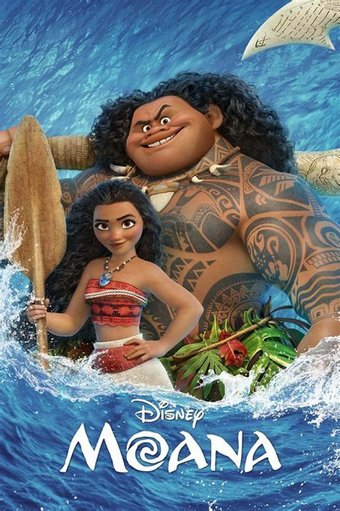

The film tells the story of Moana, the strong-willed daughter of a chief of a Polynesian village, who is chosen by the ocean itself to reunite a mystical relic with the goddess Te Fiti. When a blight strikes her island, Moana sets sail in search of Maui, a legendary demigod, in the hope of returning the relic to Te Fiti and saving her people.
The film introduces Auliʻi Cravalho as the voice of Moana and also features the ensemble voices of Dwayne Johnson, Rachel House, Temuera Morrison, Jemaine Clement, Nicole Scherzinger, and Alan Tudyk. The film features original songs written by Lin-Manuel Miranda, Opetaia Foa'i and Mark Mancina, and an orchestral score also composed by Mancina. It tells the story of Moana, the strong-willed daughter of a chief of a Polynesian village, who is chosen by the ocean itself to reunite a mystical relic with the goddess Te Fiti. When a blight strikes her island, Moana sets sail in search of Maui, a legendary demigod, in the hope of returning the relic to Te Fiti and saving her people. The plot is original, but takes inspiration from Polynesian myths.
Starring: Auliʻi Cravalho at the film's premiere in Samoa in December 2016 Auliʻi Cravalho as Moana, the curious daughter of village chief Tui and his wife Sina, who is chosen by the ocean to restore the heart of Te Fiti Cravalho reprised her role in the Hawaiian-language version of the movie.[7] Louise Bush as a younger Moana Dwayne Johnson as Maui, a legendary strong-willed yet easily annoyed shapeshifting demigod who sets off with Moana on her journey Rachel House as Tala, Tui's mother and Moana's paternal grandmother. Like Moana, Tala shares a passion for the ocean and the two have a very deep bond. House reprised her role in the Māori-language version of the movie.[8] Temuera Morrison as Tui, Moana's overprotective father, Sina’s husband, and Tala's son. He is chief of Motunui Island. Morrison reprised his role in the Māori-language version of the movie.[8] Christopher Jackson as Tui's singing voice Jemaine Clement as Tamatoa, a giant, villainous, treasure-hoarding coconut crab from Lalotai, the Realm of Monsters Clement reprised his role in the Māori-language version of the movie.[8] Nicole Scherzinger as Sina, Moana's mother, Tui's wife, and Chieftess of Motunui. Scherzinger also reprised her role in the Hawaiian-language version of the movie.[9] Alan Tudyk as Heihei, Moana's pet rooster Tudyk also voices Villager No. 3, an old man who suggests cooking Heihei Oscar Kightley as a fisherman Troy Polamalu as Villager No. 1 Puanani Cravalho (Auliʻi's mother) as Villager No. 2
Age Restriction: 13pg
Showing Times: 09:00-18:00 Today.
